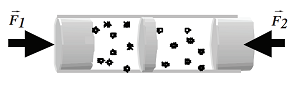

<html>
<head>
<title>MECANICA DE FLUIDOS, MECANISMOS DE TRANSPORTE, G20_U2 transp_14, fisica online, ejercicios resueltos</title>
<meta http-equiv="Content-Type" content="text/html; charset=UTF-8">
<meta name="keywords" content="problemas resueltos, ejercicios resueltos, cbc, fisica, biofisica, fluidos, liquidos, gases, bernoulli, poiseuille, viscosidad, ideales, viscosos, humedad, difusion, osmosis, nomesalen, no me salen, ricardo cabrera" />
<meta name="description" content="Ejercicios y problemas resueltos, y apuntes teóricos de Fluidos, mecanismos de transporte de fluidos" />
<link rel="stylesheet" href="win_ie.css">
<style type="text/css">
<!--
.style1 {
	color: #3F6386;
	font-weight: bold;
}
.Estilo3 {color: #3F6386}
.Estilo16 {font-size: 16px}
.Estilo25 {
	font-family: Verdana, Arial, sans-serif;
	font-weight: bold;
	font-style: italic;
}
.Estilo28 {font-family: "Times New Roman", Times, serif;
	font-weight: bold;
	font-style: italic;
	font-size: 20px;
}
-->
</style>
</head>

<body bgcolor="#FFFFFF" text="#000000" alink="#000000" leftmargin="0" topmargin="0" marginwidth="0" marginheight="0">
<table align=center width="600" border="0" cellspacing="0" cellpadding="0"> 
  <tr bgcolor="#000000" align="right"> 
<td></td></tr> <tr bgcolor="#BB0000" valign="middle" align="left"> 
<td class="bodytext" height="20"><TABLE WIDTH="100%" BORDER="0" CELLSPACING="0" CELLPADDING="0">
  <TR ALIGN="center" CLASS="menuitem">
    <TD WIDTH="43" height="19" CLASS="menuitem"><A HREF="../../index.html" CLASS="menuitem">&nbsp;<B>home</B>&nbsp;</A></TD>
    <TD WIDTH="5" CLASS="menuitem"><FONT COLOR="#000000">|</FONT></TD>
    <TD width="119" CLASS="menuitem"><strong><a href="index_hdinam.html" class="menuitem">más de hidrodinámica </a> </strong></TD>
    <TD width="9" CLASS="menuitem"><FONT COLOR="#000000">|</FONT></TD>
    <TD width="127" CLASS="menuitem"><strong><a href="../../intro_NMS.html" class="menuitem">otros temas de F&iacute;sica</a></strong></TD>
    <TD width="10" CLASS="menuitem"><FONT COLOR="#000000">|</FONT></TD>
    <TD width="160" CLASS="menuitem"><strong><a href="../../lista_ciruela.html" class="menuitem">lecciones del maestro Ciruela </a></strong></TD>
    <TD width="8" CLASS="menuitem"><FONT COLOR="#000000">|</FONT></TD>
    <TD width="67" CLASS="menuitem"><strong><a href="../../lista_tonterias.html" class="menuitem">tonter&iacute;as</a></strong></TD>
    <TD WIDTH="7" CLASS="menuitem"><a href="../energia/index_energia.html" class="menuitem"></a><FONT COLOR="#000000">|</FONT></TD>
    <TD WIDTH="48" CLASS="menuitem">&nbsp;<B><FONT FACE="Arial, Helvetica, sans-serif"><A HREF="mailto: ricuti@gmail.com" CLASS="menuitem">@</A></FONT><A HREF="../../index.html" CLASS="menuitem"></A></B>&nbsp;</TD>
  </TR>
</TABLE></td></tr> <tr> <td class="bodytext" height="19"><p></td></tr> 
<tr align="center"> <td height="1117"> <table width="600" border="0" cellspacing="0" cellpadding="0"> 
<tr class="bodytext"> <td valign="top" width="594" height="566"> 
<table width="600" border="0" cellspacing="0" cellpadding="0"> <tr> 
  <td height="74" colspan="2" valign="middle" bgcolor="#D7FFFF" class="bodytext"><span class="bodytext"><strong><em><strong><em><strong><strong>&#160; &#160;</strong></strong></em></strong></em>NO ME SALEN<br>
</strong></span><span class="Estilo3"><em class="bodytext "><strong><em><strong><em><strong><strong>&#160; &#160;</strong></strong></em></strong></em>(<strong>PROBLEMAS RESUELTOS   DE BIOF&Iacute;SICA DEL CBC</strong>)</strong></em></span><br>
      <span class="titulograndegris Estilo16"><strong><em><strong><em><strong><strong>&#160; &#160;</strong></strong></em></strong></em>MECANISMOS DE TRANSPORTE </strong></span></td>
  <td class="bodytext" rowspan="3" height="74" width="7">&nbsp;</td>
  <td class="bodytext" colspan="2" height="74" rowspan="3" valign="top" width="86"> 
<p></p></td></tr>
  <tr>
    <td height="18" colspan="2" bgcolor="#FFFFFF" class="bodytext">&nbsp;</td>
  </tr> 
<tr> <td width="150" height="57" valign="top" class="bodytext"><p></P>
    </td>
  <td width="357" valign="top" class="bodytext"><p><strong>14 - Dos soluciones diluidas, a 27 ºC, están separadas por una membrana fija semipermeable,  siendo sus concentraciones 0,1 M de NaCl (derecha)  y 0,1 M de CaF2 (izquierda). El CaF<sub>2</sub> se ioniza  completamente separándose en dos iones F<sup>-</sup> y un  ion Ca<sup>++</sup>. Sobre los extremos de ambos se encuentran émbolos (sin rozamiento) de igual área  sobre los que se aplican fuerzas F<sub>1</sub> y F<sub>2</sub> (según  muestra la figura) que generan respectivas presiones p<sub>1</sub> y p<sub>2</sub>.<br>
  </strong></p>    </td>
</tr>
<tr>
  <td height="104" align="center" valign="middle" class="bodytext">&nbsp;</td>
  <td height="104" align="center" valign="middle" class="bodytext"></td>
  <td class="bodytext" height="104">&nbsp;</td>
  <td class="bodytext" colspan="2" height="104" valign="top">&nbsp;</td>
</tr>
<tr>
  <td height="142" colspan="2" valign="middle" class="bodytext"><blockquote>
    <p><strong>¿Cuál es la única afirmación correcta?</strong></p>
    <p><strong>      a) Si p<sub>1</sub> = p<sub>2</sub> fluye agua de izquierda a derecha. <br>
      b) Si p<sub>1</sub> < p<sub>2</sub> fluye agua de izquierda a derecha. <br>
      c) Si p<sub>2</sub> = 2 p<sub>1</sub> no hay flujo neto de solvente. <br>
      d) Si p<sub>1</sub> = p<sub>2</sub> fluye solvente de derecha a izquierda. <br>
      e) Pasa solvente de izquierda a derecha solo si  p<sub>2</sub> = 2 p<sub>1</sub>. <br>
      f) Pasa solvente de derecha a izquierda solo si  p<sub>1</sub> < p<sub>2</sub>.</strong></p>
  </blockquote></td>
  <td class="bodytext" height="142">&nbsp;</td>
  <td class="bodytext" colspan="2" height="142" valign="top">&nbsp;</td>
</tr>
<tr>
  <td height="211" colspan="2" class="bodytext"><p>Lo primero que tenemos que hacer es averiguar las concentraciones osmolares a ambos lados de la membrana plasmática.</p>
    <p>A la <strong>derecha</strong> tenemos una concentración <em><strong>0,1 M</strong></em> de NaCl, que se disocia generando dos especies, ión Na<strong><sup>+</sup></strong> e ión Cl<strong><sup>-</sup></strong>. El factor de disociación <em><strong>i<sub>NaCl</sub> = 2</strong></em>, luego:</p>
    <blockquote><em><strong>os<sub>der</sub> =</strong></em> <em><strong>i . c<sub>NaCl</sub> =</strong></em> <em><strong>2 . 0,1 M = 0,2 M</strong></em><strong></strong></blockquote>
    <p>A la <strong>izquierda</strong> tenemos una concentración <em><strong>0,1 M</strong></em> de <strong>CaF<sub>2</sub> </strong>que se ioniza  completamente separándose en dos iones F<sup>-</sup> y un  ion Ca<sup>++</sup>. El factor de disociación <em><strong>i<sub>CaF2</sub> = 3</strong></em>, luego:</p>
    <blockquote><em><strong>os<sub>izq</sub> =</strong></em> <em><strong>i . c<sub>CaF2</sub> =</strong></em> <em><strong>3 . 0,1 M = 0,3 M</strong></em>    </blockquote>
<p>De donde habrá una diferencia de osmolaridad,<em><strong> &#916;os</strong></em> distinta de cero que, a igual presión hidrostática a ambos lados de la membrana, impulsará el solvente desde el compartimiento de menor osmolaridad al de mayor osmolaridad, o sea de derecha a izquierda... </p>
<p>Y eso es justamente lo que reza la proposición <strong>d)</strong> que ya la podemos dar por buena.</p>
    <p><br>
    </p></td>
  <td class="bodytext" height="211">&nbsp;</td>
  <td class="bodytext" colspan="2" height="211" valign="top">&nbsp;</td>
</tr>  
<tr> 
  <td height="52" colspan="2" align="center" class="bodytext"><table width="86%" border="0">
    <tr>
      <td height="31" align="center" bgcolor="#CCCCCC"><p class="bodytext"><strong>d) Si p<sub>1</sub> = p<sub>2</sub> fluye solvente de derecha a izquierda.</strong></p></td>
    </tr>
  </table></td>
  <td class="bodytext" width="7">&nbsp;</td>
  <td class="bodytext" colspan="2" width="86">&nbsp;</td>
</tr>
<tr>
  <td height="122" colspan="2" align="left" class="bodytext"><p>Igualmente conviene revisar las otras opciones ya que una diferencia de presión que se oponga al flujo natural osmótico podría provocar ósmosis inversa. Para eso la presión en <strong>1</strong> debería ser mayor que la presión en <strong>2</strong> en cierto valor como mínimo igual y un poquito más que la presión osmótica que mueve el solvente de derecha a izquierda.</p>
    <p>Pero todas las opciones en las que la presiones son diferentes impulsarían solvente en el mismo sentido en que lo hace ya, naturalmente, el fenómeno osmótico directo.</p></td>
  <td class="bodytext">&nbsp;</td>
  <td class="bodytext" colspan="2">&nbsp;</td>
</tr>
<tr>
  <td colspan="2" rowspan="2" align="center" class="bodytext">&nbsp;</td>
  <td rowspan="2" class="bodytext">&nbsp;</td>
  <td colspan="2" class="bodytext">&nbsp;</td>
</tr>


<tr>
  <td width="86" colspan="2" rowspan="5" valign="bottom" class="bodytext"><p></td>
</tr>

<tr>
  <td height="18" colspan="2" bgcolor="#FFFFFF" class="bodytext"><strong>DESAF&Iacute;O</strong>: ¿Cuánto tendría que valer la diferencia de presión mecánica para frenar el flujo osmótico?</td>
  <td class="bodytext">&nbsp;</td>
  </tr>

<tr>
  <td height="18" colspan="2" align="center" bgcolor="#FFFFFF" class="bodytext"><p>&nbsp;</p></td>
  <td class="bodytext">&nbsp;</td>
  </tr>
<tr>
  <td colspan="2" bgcolor="#FFFFFF" class="bodytext">&nbsp;</td>
  <td class="bodytext">&nbsp;</td>
  </tr>

<tr> <td colspan="2" align="center" valign="middle" bgcolor="#CCCCCC" class="bodytext"><table width="94%" border="0">
  <tr>
    <td class="epigrafe">Algunos derechos reservados. Se permite su reproducci&oacute;n citando la fuente. Se permite compartir el material prest&aacute;ndolo, regal&aacute;ndolo, coment&aacute;ndolo, unt&aacute;ndolo con dulce de leche o mermelada de ar&aacute;ndanos. &Uacute;ltima actualizaci&oacute;n jul-22. Buenos Aires, Argentina.</td>
  </tr>
</table>  </td>
  <td class="bodytext" width="7">&nbsp;</td>
  </tr> 
<tr> <td height="18" colspan="2" class="bodytext">&nbsp;</td><td class="bodytext" width="7">&nbsp;</td>
<td class="bodytext" colspan="2" width="86">&nbsp;</td>
</tr> 
</table></td></tr> </table>
<p></td></tr> 
<tr> <td class="bodytext"><p></td></tr> 
</table>
</body>
</html>
